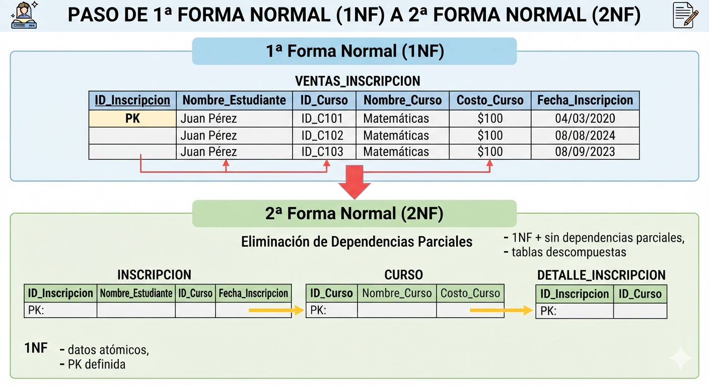
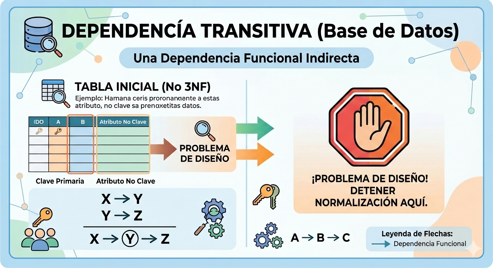

Desarrollo (Total)
Slide Actual

Para diagnosticar la 3FN, primero aseguramos que la tabla ya esté en 2FN.

Ocurre cuando un atributo no clave depende de la PK de forma indirecta.
ID_Socio (PK) → ID_Ciudad → Nombre_Ciudad
La ciudad depende del socio solo a través de un intermediario no clave.
| ID_Socio (PK) | Nombre | ID_Ciudad | Nombre_Ciudad |
|---|---|---|---|
| 101 | Gabriel Tarela | C-01 | Montevideo |
| 102 | Ana Pérez | C-01 | Montevideo |
Síntoma: El Nombre_Ciudad depende del ID_Ciudad, no de la clave primaria.
| ID_Socio (PK) | Nombre | ID_Ciudad (FK) |
|---|---|---|
| 101 | Gabriel Tarela | C-01 |
Cada atributo debe depender únicamente de la clave primaria.
| ID_Socio | Nombre | ID_Ciudad (FK) |
|---|---|---|
| 101 | Gabriel | C-01 |
| ID_Ciudad (PK) | Nombre_Ciudad |
|---|---|
| C-01 | Montevideo |
El determinante de la transitiva se convierte en la nueva PK.
Evaluemos lo aprendido hoy sobre la 3FN: